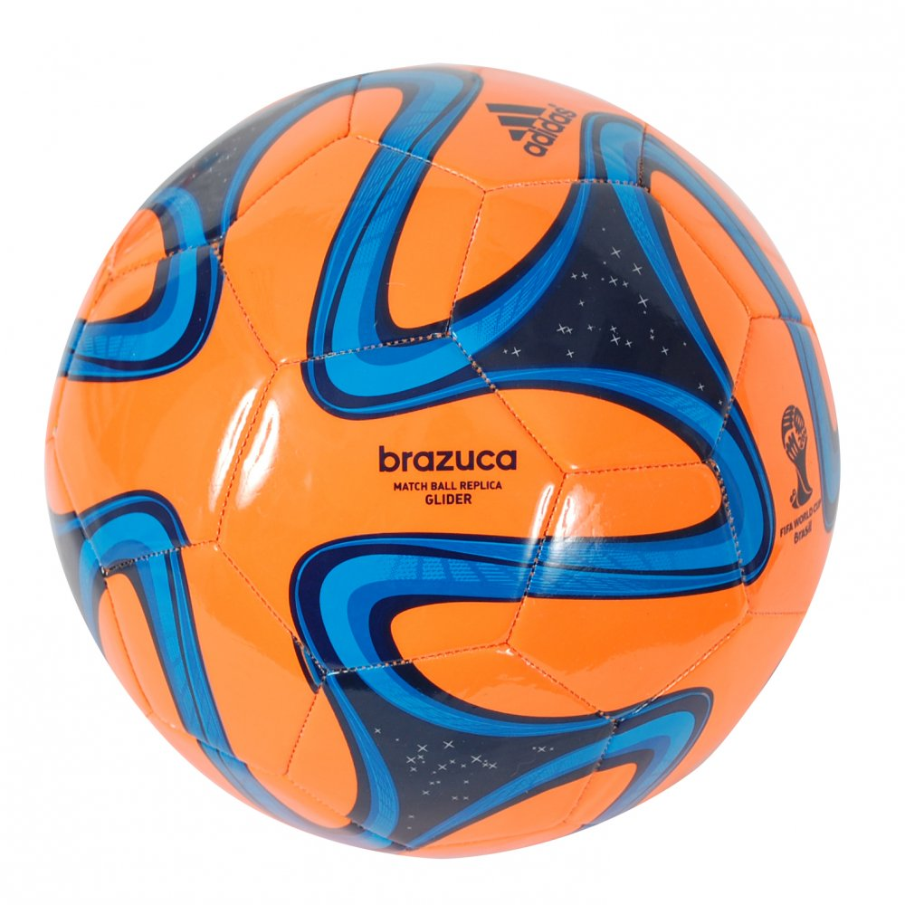

Football is one of the biggest sports in the world!!!In football there are red and yellow cards and you can't hand ball the ball in football though.You shoot the Ball in to opponents goal but beware the ball does not always go in to the goal.In football the goalie/defenders try to stop the ball from getting in to goal!
Click here to see some data about football clubs!